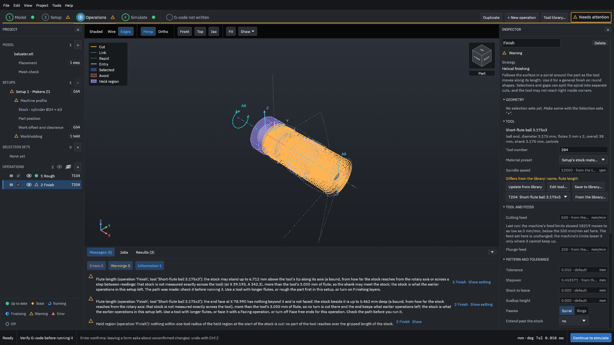
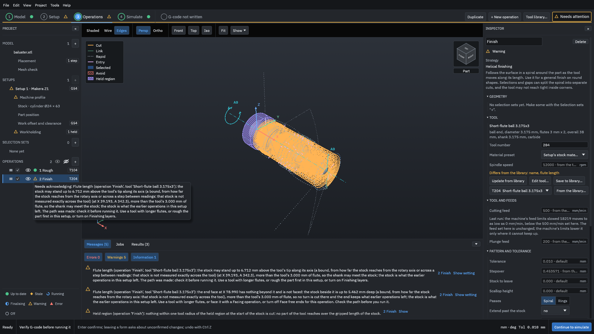

The flute-length warning
This example gives the tutorial’s finishing tool flutes only 3 mm long, so that the program warns that they may not reach the deepest cut. You read the two warnings it gives, then try each of the changes they suggest.
Warning
The flute-length warning is a warning, not a collision check. It compares the tool’s flute length with how deep the stock may stand along the tool’s axis, and the depth it uses is often a bound, not a measurement. No warning does not mean that the shank, the holder or the spindle clears the stock, the chuck or the part. Check the path in the simulation, and run an air cut first. Generated G-code must be verified by you before it is run on a machine.
You need the tutorial’s finished project, testdata/examples/baluster/baluster-project. Copy it to a folder of your own and open the copy with File > Open project. The numbers on this page come from that project on the build named in the figures’ record; your own part gives other numbers.
Note
The example project places the part 17.99 mm from the headstock face (Offset along X and Zero at X in the setup), the length of the project owner’s supplied chuck. It is not a value for your machine: for your own parts, measure the distance from the face of the headstock body to the face of your chuck where the stock starts, with your jaws fitted and gripping as you will grip, and use that number. See Set up the stock.
What the warning means
The flutes are the cutting length of the tool. Above them is the shank, which does not cut. When the stock stands higher above the tool’s tip, along the tool’s axis, than the flutes are long, the shank may rub or push against the stock. The program checks every operation for this after it makes the path. If the stock may stand too high, it still makes the path, and it warns.
A tool that fits within the flutes can still be too short in other ways: the holder, the collet and the spindle are not checked against the stock by this warning.
Because the shank may meet the stock, the program treats this warning as a possible collision: you must acknowledge it before the G-code is written. Section 3 shows where.
1. Shorten the flutes
- In the project panel, click 2 Finish.
- In the Inspector, under Tool, click Edit tool…. The tool library opens on the project’s own copy of the tool, T204.
- Set Name to
Short-flute ball 3.175x3, so the copy is not mistaken for the library’s tool. - Set Flute length to
3.

- Click Close, then Generate stale (2) at the bottom right.
2. Read the two warnings


The first warning is about the passes over the part:
Flute length (operation ‘Finish’, tool ‘Short-flute ball 3.175x3’): the stock may stand up to 6.712 mm above the tool’s tip along its axis (a bound, from how far the stock reaches from the rotary axis or across a step between readings: that stock is not measured exactly across the tool) (at X 39.193, A 342.3), more than the tool’s 3.000 mm of flute, so the shank may meet the stock; the stock is what the earlier operations in this setup left. The path was made: check it before running it. Use a tool with longer flutes, or rough the part first in this setup, or turn on Finishing layers.
Read it in parts:
- “may stand up to 6.712 mm … (a bound …)”: the depth is an upper limit worked out from the stock, not a measurement across the tool. The real depth there may be less.
- “(at X 39.193, A 342.3)”: the place along the part and the angle where the bound is largest. Here it is on the vase.
- “the stock is what the earlier operations in this setup left”: the check reads the simulated stock after the roughing, not the bare bar.
The second warning is about the end of the part:
Flute length (operation ‘Finish’, tool ‘Short-flute ball 3.175x3’): the end face at X 78.990 has nothing beyond it and is not faced: the stock beside it is up to 5.462 mm deep (a bound, from how far the stock reaches from the rotary axis: that stock is not measured exactly across the tool), more than the tool’s 3.000 mm of flute, so no turn is cut there and the end keeps what earlier operations left; the stock is what the earlier operations in this setup left. Use a tool with longer flutes, or face it with a Facing operation, or turn off Face free ends for this operation. Check the path before you run it.
A finishing operation with Face free ends ticked steps down beside each end face that has nothing beyond it, such as the point of the finial, and turns round there. When the stock beside the face is deeper than the flutes, it leaves that end out, and says so. Unlike the first warning, this one changes the path: the end is not cut, so it is not a possible collision and needs no acknowledgement.
3. Acknowledge the possible collision
Hold the mouse over the warning mark beside 2 Finish in the project panel:


Click Continue to simulate, then Post and export…, and scroll the dialog down to its checks:
![The Post and export dialog scrolled to its checks: Warning: Flute length (operation 'Finish', tool 'Short-flute ball 3.175x3'): ... A possible collision: acknowledge it before the files are written; a Held region warning and a warning about machine values not confirmed on the machine; the box Verify this G-code before you run it with the unticked box I will verify this G-code before running it on a machine; then These files hold possible collisions of the tool, its shank or its holder with the part, the stock, a tab or a held region. Read each one, here and in Messages, and check it before running the program, the flute-length warning, and the unticked box I have read the possible collisions listed for this result and will check them before running the program; Write G-code is greyed out.](images/flutes/04-export-acknowledge.png)
The checks give the warning in the same words as Messages, “Flute length (operation ‘Finish’, tool ‘…’): …”, ending “A possible collision: acknowledge it before the files are written”, and list it under “These files hold possible collisions of the tool, its shank or its holder with the part, the stock, a tab or a held region. Read each one, here and in Messages, and check it before running the program”. The tick says that you have read them and will check them; it does not make the path any different. On the command line, openchuck-cli regenerate writes the files only with --acknowledge-collision-warnings.
Close the dialog with the × at its top right: here, you fix the cause instead.
4. What to change
The warnings name three changes. Try them in this order.
A tool with longer flutes
This is the first thing to try. Set Flute length back to 22, or choose the library’s Z1 ball 3.175x22 for the operation, and generate again: both warnings go.
Finishing layers
Finishing layers cuts the finish in layers along the tool’s axis, so no one pass is deeper than the Stepdown.
- Click Operations at the top and 2 Finish in the project panel, and scroll the Inspector down to Face free ends and Finishing layers. Show setting beside a warning in the Messages list also takes you to the operation.
- Tick Finishing layers. Stepdown now says “required”.
- Set Stepdown to
2, less than the 3 mm of flute, and click Generate.
![The finish generated in layers: more rapid moves round the part in the view; the Inspector shows Material preset No preset, the Tool and feeds section open with Cutting feed 500 and Plunge feed 200, Face free ends ticked with the note The last path was made with a warning about this setting (see Messages): change it to accept or remove the warning, Finish allowance 0.100 default, Finishing layers ticked and Stepdown 2.000; the Messages list shows Warnings 4, and the only flute-length warning is the one about the end face at X 78.990.](images/flutes/05-finishing-layers.png)
The Results tab now says: “Finishing layers (operation ‘Finish’): up to 3 layers of 2 mm above a finish allowance of 0.1 mm, then the final pass on the surface; the layers start from the stock the earlier operations left, known to a simulation cell, so the depth of each cut is not uniform and no engagement is promised”.
Setting Stepdown also sets Material preset to “No preset”, and the Results tab says “stepdown 2 set on the operation overrides 1 from the cutting data of ‘Short-flute ball 3.175x3’ for ‘Hardwood’”. The operation now keeps its own feeds and speeds, each with a button to go back to the tool’s value.
Face free ends
The end-face warning remains, because the stock beside the end is still deeper than the flutes. If you do not need this operation to face that end (for example because a facing operation, or the cut that parts the piece off, does it), turn it off:
- Untick Face free ends and click Generate.

Read the result
| Finish | Flute-length warnings |
|---|---|
| 22 mm flutes (the tutorial’s tool) | 0 |
| 3 mm flutes | 2 |
| 3 mm flutes, layers of 2 mm | 1 (the end face) |
| 3 mm flutes, layers of 2 mm, Face free ends off | 0 |
The finish in layers, with Face free ends off, takes 37,002 moves against 19,152 for the tutorial’s finish.
With every flute-length warning gone, the end of the part still keeps what the roughing left: “Most material left: 1.320 mm at X 78.67”. No warning means the program found nothing to warn about along the path; it does not mean that the end is finished, or that nothing touches the stock.
A longer-flute tool is the change that keeps the path the same. Layers make the path longer, and turning off Face free ends leaves material on the end.
Common mistakes
- Reading the warning as a collision report
- The flute-length check is about the flutes. It does not check the holder or the spindle, and its depth is often a bound.
- Ticking the acknowledgement to make the warning go away
- The tick lets the files be written; the possible collision is still there. Check it in the simulation, or change the tool or the operation so the warning goes.
- Changing the library’s tool to make the warning go
- Edit the project’s copy only when your tool really is different. Do not raise the flute length above what your cutter has.
- “Use a tool with longer flutes, or rough the part first in this setup, or turn on Finishing layers”
- The roughing operation must be in the same setup, before the finish, for the check to read what it left.
- “… and is not faced … so no turn is cut there and the end keeps what earlier operations left”
- Face the end with a Facing operation, use a tool with longer flutes, or turn off Face free ends and finish the end another way.
Related: Rest machining, Stepover, stock to leave and scallop, Tool library.